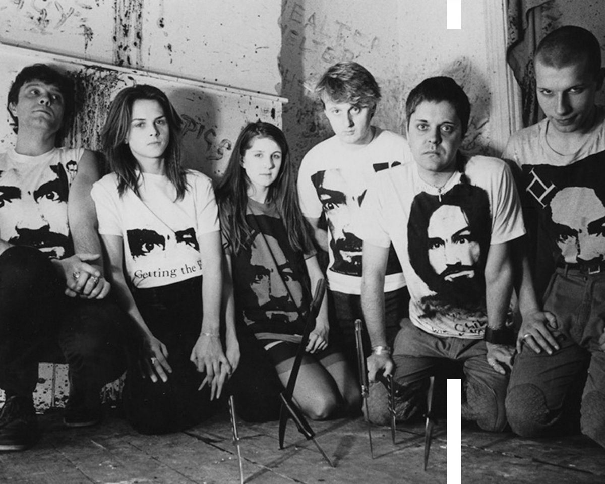
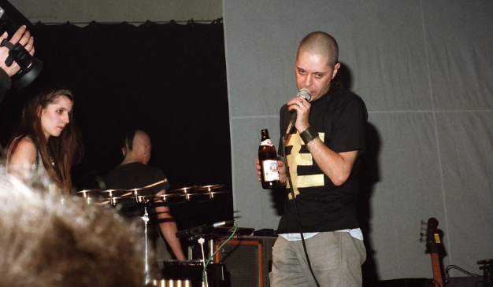

Genesis P-Orridge forma Psychic TV tras el distanciamiento de su proyecto anterior Throbbing Gristle, banda pionera en la música experimental de los 70. Lo radical en Throbbing Gristle pasaba por lo literal que se tomaban la filosofía de la música industrial, donde el paraíso psicodélico rozaba el frío de las máquinas, su caos y destrucción. Llamaron a su sonido “anti-música”, y lo que hacían era más bien una fábrica de ruido. Su interés pasaba por la catarsis sonora y no por el entretenimiento, por reflejar a la industria musical en cuanto industria. Se interesaban en la emisión del caos social decodificado y apoyado en el azar más que en lo escrito. Su meta era el accidente y la trayectoria hacia esa meta. Psychic TV siguió el mismo concepto pero lo aplicó a todos los géneros.
Psychic TV se formó en la coyuntura de esa experimentación, ampliando lo destructivo y vanguardista de Throbbing Gristle. Su repertorio se mantiene al filo de lo abstracto pero con lugar para baladas emocionantes. Su discografía es muy amplia y los géneros siempre fueron portales para atravesar con un aguja y tejer nuevos sentidos. Psychic TV es música conceptual porque trabaja con el engranaje de las estructuras. Como en su banda anterior, Genesis quería revelar la mano de obra de lo experimental y sumarle grandes dosis de oscuridad y ocultismo.
Psychic TV es también un proyecto de ciencia ficción, tan literario como los de Burroughs y Wilson. Su obra se puede leer en distintos sentidos, ya que existen hazañas que no deben olvidarse al escuchar su música. El puente entre Throbbing Gristle y Psychic TV es el crecimiento de varias obsesiones que condujeron a Genesis a sentirse una especie de chamán. La idea de la banda como una secta estaba presente, y su admiración por Charles Manson la llevó a iniciar el Templo de la Juventud Psíquica, con la intención de traducir su conciencia en distintas atmósferas sonoras que tomen un carácter y vitalidad ritualista.
Psychic TV es una banda muy completa, pero querer clasificar su sonido en géneros sería contradictorio: lo que hacían era una mezcolanza de todos los géneros populares. La contingencia era la canalizadora de su música, y creían en que la verdadera magia surgía del fuego de lo ceremonial. Por eso los 23 discos de su proyecto necesitaban ser en vivo, ya que era en sus recitales donde lo pagano adquiría un valor constitutivo. Psychic TV apostaba al trance psicodélico en todas sus ramificaciones, a un trance hipnótico y no celestial, que devele las estrategias de lo artificial. Sus shows estaban repletos de ruido blanco y sonidos transmisores del caos. Esa forma, en cierta medida, era el lenguaje de la liberación por medio de la abstracción inmediata.